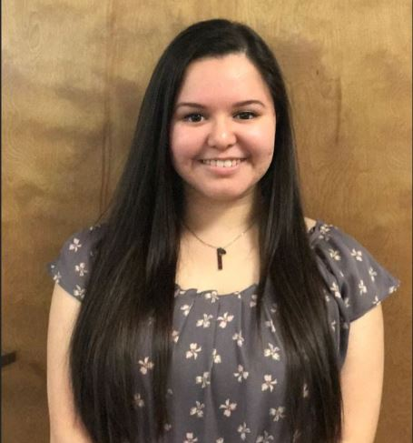
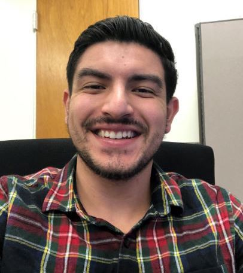
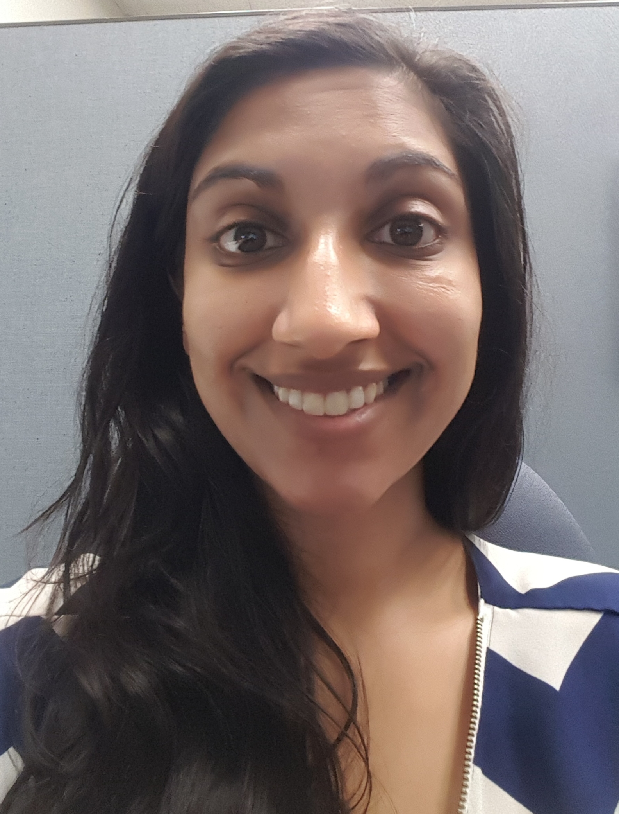
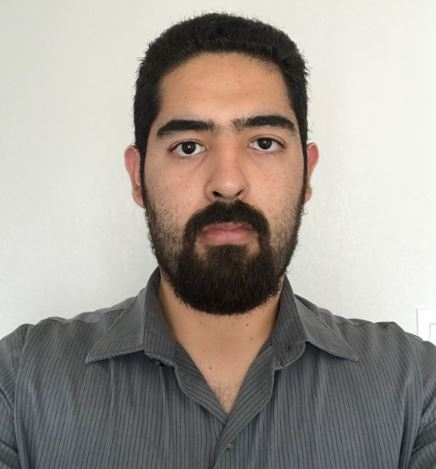
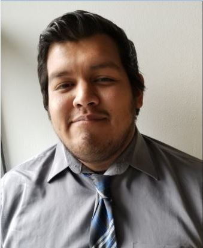
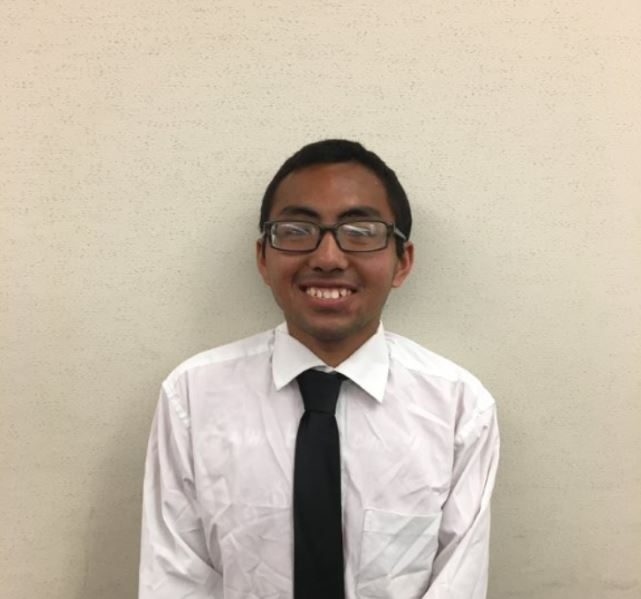
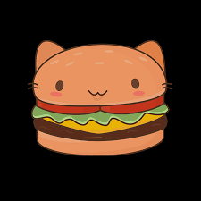
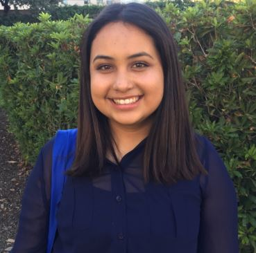
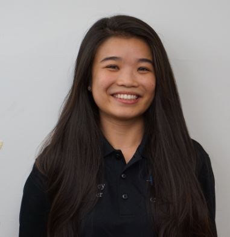

SHPE 2019-2020 Board Nominations
Executive Positions

Alyssa Rendon
President Nominee

Evelyn Delgado
President Nominee

Jesus Nunez
President Nominee

Vanessa Ureño
Vice President Nominee

Joshua Nunez
Vice President Nominee

Jaime Ulloa
Communications Executive Nominee

Abdiel Trejo
Communications Executive Nominee

Brianna Singh
Treasurer Nominee

Lazaro Lopez
Treasurer Nominee
Director Positions

Javier Romero
Director of Outreach Nominee
Miguel Tirado
Director of Academics Nominee

Miriam Solis
Director of Membership Nominee

Sam Lee
Director of Professional Development Nominee

Diana Davalos
Director of Fundraising Nominee

Pedro Resindez
Director of Events Nominee
Chair Positions

Maria Ambriz
Historian Nominee

Madina Srey
Historian Nominee

Edgar Vazquez
Webmaster Nominee

Jorge Cedeno
Webmaster Nominee